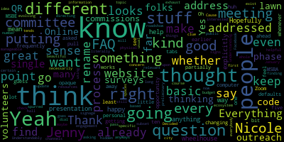
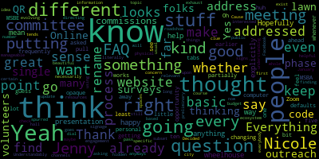

total time: 32.17 minutes
total words: 3992

total time: 4.12 minutes
total words: 785

[Graham]
: Hi, everyone.[SPEAKER_07]
: All right, you're good to go.[Graham]
: Thank you. I'll just give everyone a minute. 123 cool. hi there. Okay i'm going to go ahead and get started and. so that we can meet you later.[Morell]
: You can't rename yourself? I don't know why I do not see the opportunity to rename myself. I can do that. Thank you. You haven't been on Zoom in a while, huh? I like defaults to this. I don't know, because I feel like I keep changing it. And whenever I get on my personal computer, it just, that's what it wants.[Graham]
: So I'm going to read the meeting notice so we can get started. Please be advised that on May 8th, 2024 at 6 p.m. there'll be an MSBA Communications and Community Engagement Subcommittee meeting held through remote participation via Zoom. The meeting can be viewed live on Medford Public Schools' YouTube channel through Medford Community Media on your local cable, which is Comcast 9, 8, or 22, and Verizon 43, 45, or 47. The meeting will be recorded. Since the meeting will be held remotely, participants can log into Zoom using the following meeting ID. It's 942-9634-5391. Questions or comments can be submitted during the meeting by emailing Jenny Graham at medford.k12.ma.us. Those submitting must include the following information, your first and last name, your Medford Street address, and your question or comment. Okay, so without further ado, I'm gonna go ahead and take the roll. Jenny Graham here. Maria Dorsey here. Nicole Morrell here. What's happening to my spreadsheet here? It's a little cranky. Marissa Desmond here. Hi Marissa. Tom Dalton here. And Luke Preissner. I don't see Luke yet.[Dalton]
: He just emailed looking for the Zoom link, so I think he'll be with us any second.[Graham]
: Great, thank you. Okay, so our agenda for the evening. We have just a handful of things to talk a little bit about. And essentially all of this information will feed back into a report that I'll give to the school committee on May 20th. So the goal for tonight is to sort of hash through these things in sufficient detail that we can then bring them to the school committee so they understand some of the objectives that we're pursuing from a communications and community engagement perspective. As you know, there were like 104 or 105 people who wanted to be on the building committee and they were all like very qualified for any number of reasons. And we can't have a committee of 105 people. or actually 115 by the time it's all said and done. So, I think people are rightfully excited about the project and they wanna know how they can participate. And I think that goes not just for the folks that applied for the building committee and were not selected, but also just for the community at large. And I think if you sort of tune into what you're seeing, people ask about, you know again we're sort of in this like paperwork phase where we have a lot of like legwork to do before we get to the exciting stuff that is going to answer the questions people really have like where will it be and what will it look like and will Medford High be renovated or will it be new or will it be some sort of thing in the middle and and how much will it cost and when will it be done so all of those are like the real exciting questions that I think people want to get to, but we've got to sort of make our way there over the coming months. So I think just talking through some of that I think is important for us tonight. I'm going to try to take notes and then firm it up for the larger group. you know this is a small group so I want to make sure people just feel like they can participate and we'll just sort of plug away at the agenda one piece at a time and hopefully we will not need two full hours to do it. Does that sound good? Okay cool. So the first thing I wanted to talk through a little bit was the first draft of the website. So Tom is actually going to give us a little bit of an update on that and just where we're at and what sort of his vision is. Hi Luke, how are you? And talk a little bit about like where we are in terms of the formation of the website. So Tom, I'm gonna turn it over to you to give everyone an update. And then I'm assuming this group may have some suggestions or thoughts to help inform that first vision.[Dalton]
: Great, thanks Jenny and hi everyone. To start with just a little bit of background about how we kind of approach the Medford Public Schools website in general, we use a, lets us build out a lot of really nice web pages. If you've been to MPS 02155, You'll have seen this website. It's been updated. Basically, the school department built a completely new website about two years ago. So we have a nice fresh website. We're going to be building the building project website on the same architecture and actually as part of the same project. the same web platform. Sorry about my connection. I'll try turning my video off, see if that helps. Okay, great, great. I'll leave it off then. So we're working with final site. The actual website work gets shared among a few different people, but the two primary actors are me as the communications lead for the district and our colleague, Lisa Miller. Lisa Miller is the web design and computer programming teacher on the vocational side at the high school. So she's a full-time teacher, but she also has done a lot of really good work building the new website. And frankly, she's kind of the web design, the web architecture expert when, you know, putting the two of us side by side. So I rely on her for a lot of the kind of engineering support on the website and together we build things. So the reason we don't have a draft of the building committee website ready is just because of her limited time. But, you know, we're hoping to iron that out soon. Now, I will share my screen so that I can point out a couple things on the existing website to let you know what I'm thinking about as we start this process.[Graham]
: That would be great. Thanks. Are you able to share, Tom?[Dalton]
: Yeah, I should be able to. Okay. Taking a minute to decide if it's going to let me. As these things tend to go. Let's see. Here we go. So is everyone able to see my screen?[Graham]
: Yep.[Dalton]
: Great. So this is the school website. We did secure a domain for the building committee website. It's buildingmhs.org. We, we picked up that domain, it's ours, we own a couple of the adjacent domains.net.info to make it, you know, harder for unscrupulous people to make copycats to try to misdirect people. So we do have buildingMHS.org. And that's what the you know, the URL will read when you're on the website. But to show you an example of some of the things I'm thinking about, we're going to go to the school committee page, because I think there's some good models for kind of what the initial draft of the website can look like. So the way I see it, there's kind of three big things that we want to accomplish right away with the website. First and foremost, given the activity of this committee and the flurry of meetings that we have, I think it's really important to set up a meetings page. I think it would look a lot like this, where we'd be able to list meeting dates, include links to agendas, Zoom links, any associated documents with the meeting. I think that's really important just from a transparency perspective. And also to make it easier for members of the committee, because if you are jumping on a meeting, you need the agenda, you need the Zoom link, they can all be kind of in one place. So I think this will be a really important thing to get set up right away. And because we can basically copy the format of the school committee's meetings page, that'll be set up no problem. We'll definitely have a news tab pretty quickly. Right now, our building committee news is still in school committee news. It might remain there and get duplicated over into building committee news, since the building committee is kind of an organ of the Medford School Committee. But again, this would be a place where any of our news updates could all be kind of found in one place. We did a press release announcing that we had the first meeting of the building committee last week. So things like that would have a home there. We're definitely going to need a space for documents. There's a lot of different documents that the building committee is obviously developing. As they're ready, we want to be able to share them with the public. Um, again, in the interest of transparency and also to kind of document, um, the work that we've done so far, um, that might look something like, uh, one option certainly, um, would be to kind of look like this budget page, um, This is something that basically gives us a limited file navigator. So we could have folders for different categories of documents and then links to the documents pretty readily available. So I think it could look a lot like this page. And then the final thing we'll need to do, all of you have submitted really nice bios and photos of yourself. And I do think it's valuable and important to list out the membership of the committee with those bios. you know, kind of put a face to the work of this committee. So that's the very fast version. And I can stop sharing, I think. That's kind of how I'm thinking about it. You know, the first things we need to get through are a meeting page, documents page, news page, and a kind of about the committee page that includes the list of the members and their bios.[Graham]
: Luke, did I see that you had a question in the chat?[Preisner]
: A recommendation. Sure, go for it. I've seen many of these websites, and occasionally when they load, the browser throws errors.[SPEAKER_07]
: Yeah.[Preisner]
: Suggesting that they're not secure. So that's not common, but it happens. Somerville is the one example. that I have on my mind, but I think there's others. Whereas others, Belmont stonems, they load normally, they don't throw any warnings. And so I think there are basic best practices and I just wanted to bring them up so that they're not forgotten. We're still early, we're setting this thing up and we just wanna have that in mind. We don't wanna throw errors suggesting that this website has been compromised in some way. We want people to feel like they're seeing the truth.[Dalton]
: Yeah, that's a really good point, Luke. And certainly the MPS main website uses HTTPS protocols, the secure URL protocols. I would definitely make sure that building MHS.org is also going to be kind of fully secured and not raise any flags in that regard. Because yeah, I agree. One of the really important functions is to not only to be the official repository of all this information we're gonna get up there, but also to look like. I mean, that matters a lot. Great, thanks.[Morell]
: Oh, go ahead, Nicole. Thanks, Jenny. I guess one thought I had, this looks great, and I think all these tabs make sense, just to Jenny's earlier point, is their thought is like getting a basic FAQ up kind of right away. I know a lot of the frequently asked questions are already addressed or at least partially addressed on the MSBE website, whether we can pull those in or just even have, you know, five to ten like What is this? Like, why are we meeting? Why are people meeting? You know, very kind of basic stuff, since this is a little bit, not to say it's an opaque process. Everything's on the website for MSBA, but most people don't know how this works. Understandably so.[Dalton]
: Yeah, I agree. I think that would make perfect sense to build out in the kind of initial spec. And like you said, MSBA has so much information already available and our peer districts have already answered a lot of these questions too. So yeah, I'll review some of the FAQs that MSBA has available and maybe that other districts have available, see what we want to pull over.[Preisner]
: Great. Luke. So kind of along those lines, I've been thinking about what do you need at the start, you need an idea of what community wants to know. FAQs that are the responses to that. But I thought to myself, what if we conducted a canvassing for some period, two weeks, three weeks? I mean, we have time, right? Our clock just started last week. We just canvass the community and we say, we put out a questionnaire, whether it's through a SurveyMonkey thing or through a Google doc, and we open it up, see what comes in. We may get a lot, we may get a little. If we get a lot, it's actually pretty easy to process a lot. And we see kind of what the most common questions are from our community. And then we kind of cross check that against FAQs from other building websites, from the MSBA. And then that way we're addressing what our community wants, as well as, you know, maybe some of the process stuff that other websites have already addressed. it would kind of dispel the whole cut and paste feel. You know, if we see the exact same FAQ responses here as we do on the LSBA side, you know, it makes it feel like an empty gesture. But if we, I think if we canvas the community and we ask, I think it will add a lot of, you know, goodwill to it. And plus we'll have an understanding of what the community really wants to know.[Graham]
: Um, I love that idea. And it actually goes to sort of one of our other agenda items, which is like, what are those community engagement opportunities? So we can definitely do that. I think keeping it simple obviously makes it easier to execute on, but based on what you're saying, Luke, the two things that I captured in terms of like what we would want to know is like, what questions do you have about this building process? And what are you looking for in a reimagined Medford High School? Right? I mean, are there other questions that you think would be important to pose to folks?[Preisner]
: Yeah, what do you want to know about the eligibility process? Because that's what we're doing right now. We have a mission. Granted, we have a strategy that is going to get us to a high school, but we actually have a tactical mission, and that's to complete this year with entry into feasibility. There are aspects of the eligibility process that are unique to that process. Once they're completed, you know, move on, but people may want to know about what do we have in front of us this year? What do we need to do as part of eligibility? So that I think should be a question. Like, what do you want to know about the eligibility process?[Graham]
: Sure.[D'Orsi]
: Jenny, I'm one of their questions.[Graham]
: I'm going to actually I just realized I'm not sharing my screen. So I'm I'm capturing all this as we talk. So let me share my screen. Can you see my screen? Yes, OK, perfect Maria.[D'Orsi]
: Yeah, one thing that I would like to see possibly is a statement about why we're undertaking this project, because I've heard some people say the building is only 50 years old. There are a lot of buildings in Metro, a lot of houses that are only 50 years old too. And I think possibly a statement about what exactly the reason is that we're doing this project. What are the failures of the building, the inadequacies, I think that might be helpful, and especially in light of our current situation with funding, how we're going to go about this when we're facing all of these other shortfalls.[Graham]
: Sure. That's actually a great point. Thomas and I had talked a little bit about like pinning like a welcome on the page to just say like, welcome to this page, this is what you can find here. We're all really excited about this. So I think we could do, we could pull that like why into that landing page so that people can hear some of that as well. And I think we'll get a lot of those FAQs in terms of like, how will we pay for this? And I actually think some of those answers are gonna start to like flush out really quickly, you know, in terms of like, how will we pay for the feasibility study? All those answers are gonna come really fast because we actually have a short window to set aside our feasibility money here in Medford because free cash will be available only until June 30. So we will need to get that done before June 30. So, you know, we will have, You know, if the plan continues to be to use free free cash, we will have to get a favorable vote from the council to move that money earmarked into this into the Oh my God, what's the word I'm looking for? Sustainability fund. Oh my God, it starts with an S. Stability fund, thank you. Into the stability fund before June 30 so that it is there and ready to go. Stabilization, yes, thank you. So yeah, I think there will be a lot of good questions about that along the way. And I do like the idea of like, asking people what they want to know before we push out like just a pile of FAQs, because I think we can anticipate reasonably the questions people have. This committee is 25 people, like I think we have a good sort of perspective on that, but to the point of community engagement, I think I want to hear from people first before we start telling them what questions we think that they have, right, so.[Morell]
: Yeah, and I think that helps just keep the number manageable too, because if you're putting down like 30 FAQs, people just check out and can't find what they want anyways. Right.[Graham]
: So I have three questions. What questions do you have about the Medford Comprehensive High School Building Committee? What questions do you have about the MSBA eligibility process? And this is not a full question, What do you want to see in a re-imagined MHS? How's that? That's good. Do we wanna know, you know, we do a lot of surveying where we're collecting demographic information. Luke?[Preisner]
: So for the last one, I like the spirit of it, but you're just gonna get a lot of answers. And for the FAQ, and I think that's a question to ask, but for the FAQ, maybe frame it as, you know, like, what questions would you have about the re-imagined high school, right? Because we want to produce questions. Sorry, I might be hyper-focusing on[Graham]
: think we can probably do both ask like try to inform the FAQ and start to get people excited about yeah like what might this look like in the end like I you know I was able to take a tour of Arlington High School and um they they just had stuff that like Certainly I didn't have when I went to high school, and MHS doesn't have like they had this discord, they had a room they called it the discourse room and had like discourse on the wall. And it was like a shared classroom space where multiple classrooms could convene together. do things like have debates and it was it's set up in a fashion that sort of facilitates that. And of course, the principles like here's the one thing I don't like about this room, but in general, it was like the idea of like collaboration space for classrooms to work together. was I was just like, oh, if you ask me what I wanted in a building, I never could have described that because it's beyond anything I've seen. And I don't work in schools every single day. So there's stuff like that where like, I think asking people what they want to see is going to give us like some like really fascinating ideas because people in Medford have been everywhere and have all kinds of different experiences. And it might just give us some good food for thought to help us inform the educational profile, like ask as well, which I think is pretty exciting.[Preisner]
: I think I'm tracking now. And so now I'm starting to imagine the questionnaire as a two-way communication, right? So we're asking you community for questions that you have about all this, but we're also going to ask you a question. What do you want to see? Right? And if you structure it that way and almost break out the third question as a separate thing, here's a question to you. I think that could work and I think people would really enjoy that. And some people that really just want to talk about what they want to see and they may not even give us any useful questions, whereas you might find these other sort of like, I don't know, more procedural process driven people who have a lot of questions about how are you going to get from point A to point B to C and so on. And so structuring that way as almost two separate sections in a short questionnaire could be really effective in getting like broader engagement.[Graham]
: something like this.[Preisner]
: That looks awesome to me but um what are others on the committee think?[Dalton]
: I mean there's one yeah there's one possibility and not to narrow it um right out the gate but we could do multiple choice right? I mean we could you know, poll kind of broadly about what the community priorities are. Is the priority a sustainable net zero emissions building? Is the priority a building that includes community spaces? Is the priority, you know, really, really big vocational spaces that allow us to expand voc programs? That could be one kind of question, but I also see a lot of value in keeping it open-ended, so I'm not married to that, but wanted to raise it as an alternative.[D'Orsi]
: One thing that I think people may ask right off the bat is what is a comprehensive school? Most people do not know what that is. So we're calling it this comprehensive high school. How could they even answer the question if they don't know what that is?[Graham]
: Yeah, we can give it a little bit of a preamble. And we can include a link to the statement of interest as well if somebody really wants to dive in.[Preisner]
: Yeah, it's true. I don't think a lot of people know that's available. Well, I mean, some do, but I don't know if there's broad awareness that the SOI is now posted. And it's not just the SOI. There's like the results of the environmental building conditions survey. There were like two separate studies done there, which was actually really important. That helped the SOI tremendously.[Graham]
: Yeah.[Preisner]
: And all of that is available. And I think people should know that it's there. And when they see this survey, that might be the first time that they realize, oh, I can go and take a look at this.[Morell]
: Right. Nicole. Yeah, I think I think this looks good and I think it's just helpful to think of as far as like the whole ecosystem of stuff we're going to do for engagement and asking these questions because it's just like if this is just like our preliminary or first pass. I think it's great and we don't it doesn't have to. address every single thought. I know this was like spurred by the idea of FAQs and then we kind of it's already evolving but then just thinking like are we you know how many other surveys or other outreach things are we doing so just like we don't have to necessarily have this address every single concern question we have right now but also understanding how many more or what other ways or what specific topic-based surveys or outreach we'll be putting out there. Yes, that's a good. Yeah, those are good questions.[Graham]
: I Something like that. Click any of these that apply.[Morell]
: Yeah.[Graham]
: Cool. OK. I guess the other sort of question sort of to zoom out from like the survey, which I think is a great idea to start to get people familiar with what's happening. I wanted to talk a little bit with this group about other things we should be thinking about doing during this eligibility phase to draw in and keep the community informed. I don't know if anybody has thoughts on like things they've seen other committees do in this phase or ideas. Like, I think, you know, the obvious thing is like, I think at some point we should offer some tours of MHS because there's plenty of people who have never been inside MHS. And, you know, there's plenty of people who have been inside MHS, but it's been, you know, many years or, you know, or something else entirely. So we may wanna sort of think about some tour dates of Medford High School. And I don't think that necessarily has to be like in the next like gauntlet of 60 days, because the next 60 days are like very sort of brutal in terms of calendars, but we could even schedule them for the fall and think about what do we wanna see in those tours. But that's just like one thought that I had in terms of like obvious engagement things. Wasn't sure if anybody had any other thoughts about that.[Morell]
: And when you say this phase, this is the phase that goes until January.[Graham]
: Yep, like I said, my big goal is that we're done long before January, but even if we are like, there's no building before January, so we have time.[D'Orsi]
: Maybe we could ask some of those, the media tech students to do some video tours that could be attached to the website and show them some of the spaces that, you know, cause a lot of people can't get in there, especially older people that building isn't, isn't handicap friendly, so maybe video tours as well.[Preisner]
: That's a great idea. So Nicole's got her hand up, but then I want to go afterwards. I haven't figured out how to do the hand raise and zoom.[Graham]
: It's in the reactions. It's in the reactions.[Morell]
: It's hidden. Nicole? Just a thought as far as like, I know Online tends to be, of course, all this stuff is going to exist online, but directing folks there, if there is a thought of like some physical signage, whether it's like stuff that can literally be like at city hall with a QR code or on like, you know, we could even do like. If there's budget for just like some lawn signs that could be on some public spaces with a QR code where people can then find out. Cause if people aren't on Facebook or all the usual channels, we could have all this beautiful information and people, you know, a certain subset of people will still have no clue.[Graham]
: Right. Okay, Luke.[Preisner]
: I really like your idea. Now, have you ever seen those before and after photo that it's almost like this like unique little subculture where people sort of uh, try to copy like a picture they took together like 30 years ago, but in the present, you know, so you'll have like a brother and a sister kind of sitting by side on a swing when they're four. And then they try to recreate that when they're 40, that sort of thing. Um, so kind of along those lines, there's actually a video, um, and it's available through the, uh, the library and it was filmed in 1970. And it is like a tour through the school. And like there's cuts, you know, between one building to the one room to the next, they talk about, you know, this great new, like woodshop area, they talk about the cafeteria, wouldn't it be cool if the if there is a media tech team, that they try to recreate that and show us what it looks like today. And then we have the two videos. And in some cases, it'll be amusing. But in other cases, I bet it'll lead to almost shocking reflections of, I can't believe it still looks the same way. And maybe it doesn't even work anymore. You know what I mean? The comparisons could be stark in some cases.[Graham]
: Yeah, I think that sounds amazing. Actually, the thing that comes to mind is the theater. Like, I imagine when it was built, it was like the bee's knees, right? Like, it's like an amazing theater with all this technology. And now if you talk to the Medford High drama students who just put on a show, they're like, why can you only hear one voice at a time? And it's because the technology is dated and it's, that's, sort of all it's capable of, right. So I think that that could be such a like cool, fun, creative project. And we have a media tech group of students who I'm sure could do some pretty amazing things with that concept, especially if there is this like this video from the 70s, that could be very cool.[Preisner]
: Yeah, I don't know who to send the link to, but I the videos out there and the library has posted it on their website.[Graham]
: Do you have it handy.[Preisner]
: I mean, I could post it in the chat. Yeah, just post it in the chat and I will throw it in this document so that we don't lose it on the side and then I'll post it in the chat.[D'Orsi]
: Um, um, I don't know if this would be useful, but I'm having all of our yearbooks digitized. And while I was going through all of the stuff that I have to get ready for that process, I came across the newspaper the Mustang newspaper that was dedicated to the fire of the old building. And it has a lot of pictures in there of that older building, including all of the damages. And I don't know if you are thinking about an historical perspective, that might be interesting to include some of those pictures as well. But just wanted to, I have that, so.[Preisner]
: All right. Actually a ton. So long ago, when I first got really interested and kind of terrified, I went to the library. And this is like, I think, after I read the first, there was an SOI before this current one. After I read that one, I thought, well, you know, I need to get a better idea of kind of all the sort of relevant aspects. And so I went to the library and I spent hours in there. And it is phenomenal. how many press clippings they have and flyers. And you can actually piece together the sequence of meetings, the community-wide decisions, a whole number of things. From press articles, there was like a Mercury, Medford Mercury. Yeah. And I bet if you went to one of the librarians and asked for the folder that she had, well actually I don't know if we still have it, they definitely have the material. She handed me a folder, like she actually had a dedicated thing because I her ahead of time. And I told her I wanted to research the high school. And so she put this whole thing together. I wonder if she still has it. It was like the head of the head librarian. This is back when they were like the library, and they had all their materials on Boston Ave. So I had to go to Boston Ave. And it's thick. It's like, you know, six to eight inches thick. It's like this folder opens up. And it's just like clipping after clipping after clipping. There's a lot of material there.[SPEAKER_07]
: Awesome.[Graham]
: Cool. All right. I love it. What else? The other sort of related communication piece for the eligibility phase, I thought, was during the application process. We got some notes from some of our various boards and commissions and people who applied who said, I also am on this board or commission in Medford. And I think you need to be connected to them. So I think the other thing I'm interested in talking about from an engagement perspective is, who are those boards and commissions that we should be thinking about reaching out to? And do we maybe do some outreach to them to say, here's roughly what the process looks like. tell us what the, you tell us what the right time is to be connected to you, or have a conversation with us so we can figure that out, because I don't think everybody is going to be interested in all of the phases, but, you know, and there may be some commissions that are not so directly connected at all, but there may be, there are probably many that are connected and might want to sort of be starting to think about their place in this process as an independent commission from the school building committee. So I don't know if maybe like our short-term approach is just to, you know, survey them separately with a separate set of questions, or if you all have any other thoughts about how we might engage with our boards and commissions.[Morell]
: I think that makes sense because I think my thought was like doing like a roadshow, but to your point, not everything is going to be relevant to everybody. And we also don't want to exhaust the resources of the volunteers, but you know, in a very long process. So yeah, I think finding out where, what are different commissions or maybe dial in or be interested in an update and then using folks to, you know, have like a, Decided upon presentation or something and having different representatives be there. Hopefully. Hopefully we could do that in a way where it's not like, always, you know, Jenny Graham going to 16 meetings. But we can have different volunteers from the committee go to different commissions and committees.[Graham]
: Yeah, I mean, we certainly can develop a roadshow presentation that, you know, we can just like sort of pick it up off the shelf and and send somebody to the meeting, but they have like that assistive support. So I think that makes a lot of sense as well.[Desmond]
: Um, the board that I am on that's a summer camp board, we had done like a whole master planning exercise and we had created a like a roadshow presentation that we put on in a couple of different, like, you know, we announced it in a couple of different places to say like, oh, this one's going to be focused on that. This one's going to be focused on that. And then people either called in or showed up to those specific, um, presentations depending on whether or not they were interested. So instead of us going out to 16 different locations, is there a way to bring people together, like four or five?[Graham]
: So Marissa, are you thinking like we hold like, you know, a summer meeting or something that invites all of our boards and commissions to come in here, like an info presentation to sort of warm up?[Desmond]
: Yeah, I mean, maybe or maybe there's like after the survey there's a way to kind of bring to cluster them together in a way that it's not 16 different presentations it's four presentations to like a differing number of people or a different number of groups okay[Graham]
: Okay, so we were thinking about surveying boards and commissions. Does your board or mission have a topical interest? Is that the right word? A topical interest in the school building committee? That the right appeals clunky but multiple choice there just so we don't get a million different answers.[Preisner]
: Is it topical or professional?[Graham]
: Do our boards and commissions have like a scope or like a charter or something?[Morell]
: Some of them are explicitly outlined in the charter and others are ad hoc. Okay.[Desmond]
: Is it maybe just like an overlapping interest?[Preisner]
: I'm sorry, Marissa, can you repeat that again?[Desmond]
: Is it maybe, yeah, overlapping interest.[Preisner]
: Yeah, overlapping. I was thinking aligning interest or alignment. Something along those lines. So I think topical is just like, I heard about it. Yeah. OK.[Graham]
: I like overlapping. It's either overlapping and or aligned, right? Like there's probably, like I'm imagining we're gonna wanna talk to like the Bicycle Commission and Walk Medford and the Disability Commission. There's lots of them and they all have sort of different things that they probably wanna weigh in on and be part of. Okay. And then what is the best way to reach you? And do you have any questions for? Okay. Um, other thoughts on like near range community engagement. The other things that I, I sort of been thinking about. There are like I said, last was it just last week. There are some things that are sort of the purview of the school committee to decide. So for example, will we be going after expanded vocational programming? And if so, which ones? And that presentation is scheduled to come to the school committee, I believe, on the 20th. And so there's some overlap will certainly want to make sure that school building committee members know that that's happening. But that will inform the chapter 74 document that we need to fill out. Because if we say yes, we want to have a new program and it needs to have this kind of capacity, it needs to go you know honor by honor chapter 74 form in order to be part of the process at all so. There's some, I think some things like that, and Curtis Tufts, the co-location of Curtis Tufts, where we have some subcommittee meetings scheduled. And I think the other big topic where that might happen is when we talk about all of our early childhood programming and, you know, any sort of changes there, which I think the administration still sort of working through, but there are some things like that as well that like the way to, you know, sort of know what's going on is maybe not just like just tuning into the school building committee, but also there's some like topical things that are going to happen outside of that. So I'm just wondering if Thomas, maybe we need to think about framing some sort of like periodic update about those kinds of things into the superintendent's weekly memo so that if there is something like that where it's like sort of crossover related that we can describe it.[Dalton]
: Yeah, I think that makes a lot of sense. I mean, the nice thing about the superintendent's weekly memo is that it hits every family in the district. So it covers our school community really well.[Desmond]
: It does not necessarily get to the wider community. Yeah, so I was just about to say that my children aren't old enough to be in school yet. And so we do not get that information, but I obviously have two young children and this is important to me. And like a lot of the families that have asked me about this so far do not have kids that are old enough to be in school yet. So getting the information out, yeah.[Dalton]
: Yeah, we need to be creative about how to kind of collect that audience with time.[Graham]
: Do we create a separate mail list, Tom, for people who are specifically interested in school in the process?[Dalton]
: Yeah, one of the pieces of functionality that our website has is that you can sign up for automatic updates when a news post is added. And so we could have that set up for just the building committee section too. And that would cover anything that we share in terms of meetings, press releases, updates. Likewise, we do have individuals sometimes sign up for the superintendent's memos and the other district news. through that, even if they don't have children in the system yet. Ultimately, we'll want a list of some form. I think it's just a question of how we gather it. Okay.[Graham]
: Marissa, did you have another question?[Desmond]
: I did, yes. So I think the main question, this kind of off of what we were talking about, but the biggest thing that people have been asking me also is what is the timeline? And like, I know that we don't know the timeline because there's all these different things, there's so many factors involved in it, but is there a way that we can convey some type of like graphic representation of the timeline, similar to that little diagram that you had pulled out? That's like, here's where we are and here's where we go next. that could be like circulated through the community so that people have a bit of an understanding about like what the steps are and what the overarching, like, you know, this could take six months or this could take a year. Like, I don't know if we want to pin any actual timeline, period of concrete time to it, but is there a way to visually represent this process?[Graham]
: Okay.[Preisner]
: Luke? Yeah, so I just wanted to kind of make the caution, and I agree with a lot of what's been said. We, in this phase of the process, need to be careful about not sort of cultivating the perception that we're making any promises for things. We want to listen to everybody, but we're really, really early on. And there might be some things that we can't do or some things that are just, we don't want to give anybody the wrong idea. We want to listen. We want to collect. And so I think in eligibility, that's important. To Marissa's point about how long it takes, no one's got a crystal ball, can't predict how much or how long this particular project is going to last and like our performance through the gates, but we certainly have a trove of evidence from other schools that have conducted this process. And it's measurable. It takes a little bit of effort. I've actually done some of it on my own. It's just like a press releases. Everybody announces when they're accepted. Everyone announces when they move to the next phase. And then it's just simple math. And if you do it across enough communities, you can sort of get a rough picture of how fast you can go through it if it's a pitch-perfect game and how long it could potentially go if there's deep-rooted acrimony, because there's examples of both. And so, I mean, I don't know necessarily if we want to have that kind of data science result posted on our website, but it's certainly something that almost anybody could do. But I just, But it gets to sort of the making promises. Because if you post the graph and the bell curve is like, we should get through this in seven years, then it almost implies that we're promising that. And we just don't know. I would love to. And that's why I volunteer. I want to help as much as I can so that we get as close to that as possible.[Graham]
: Yeah, I think we could probably create a pretty like simple and not grainy graphic. Like I just copied and pasted them off of the MSBA website, but they're not even like in the MSBA website in such a way that it really lends to that in a high quality way. So I think we could just create something pretty simple that would show people what the steps are. And we could just be like, here's where we are right now. We are here and we'll let you know when we go to the next step and whatever it is. So I think that would be pretty simple to do without, I think to your point, like making promises. Other thoughts about community engagement. I think we have like a really nice list here so far.[Morell]
: Yeah, I mean, I think there's the option of attending community events or just I'm thinking like the farmers market or something doesn't have to obviously be every week, but just let people know this is happening and how they can learn more and get involved.[Desmond]
: Yeah, the the. if they do that summer concert series as well. There's like the family concert series. That would be a great place to have a little table.[SPEAKER_07]
: Yeah.[Graham]
: Okay. Sorry. Share again. We can move on maybe to the next question. So I'm just keeping a list here. Can you see my screen again? Okay. Um, And, you know, any of the, forgetting what the like, not circle the square, but that's another one. There's another big fest down in the summer in Medford Square that the chamber puts on. I'm just trying to remember what it is.[Morell]
: The clippership lawn. I can't think either.[Graham]
: Is it clippership day?[Morell]
: Something like that. I can't think of it.[Graham]
: I know I ended up in the dunk tank one year. That's all I remember. I'll put clippership day, but we can find it. OK. I think that makes sense. And then the last item on our agenda for tonight, and just applaud us in advance for moving amazingly fast through this agenda, because I know everyone has places to go and things to do. So one of the questions that we'll have to answer in the educational profile is this question. So it says, describe the community outreach that has occurred to this point and any future plans and goals related to engaging the community on the Medford High School project. If considering grade reconfiguration, consolidation of facilities and or a change to the current teaching methodology, describe the outreach and discussions that have occurred to this point and any future plans to engage the community on the proposed changes. Additionally, indicate whether the district has determined whether or not override or debt exclusion might be required for full project funding. So I think if we get sort of broad agreement on all the things that we described up above, that is our community engagement plan. And we can write a narrative that describes all of that. I don't believe that we are considering grade reconfiguration or massive changes to the teaching methodology. Again, with those like few exceptions. So we can, in this section, we can point to those community discussions happening at school committee and those approvals here in terms of like other touch points of community engagement. And then, The final piece is indicating whether we've determined if we will need an override or a debt exclusion for full project funding. And I will check with the mayor, but I believe the answer is yes. I don't think this kind of project gets done without that. But I just wanted to put this question out there just to get the juices flowing and have you all think about anything that you want to add. Luke?[SPEAKER_07]
: Oh, you're on mute.[Preisner]
: I just wanted to introduce a process check here. These are specific what the grade reconfiguration consolidation facilities changed current methodology.[Graham]
: That's a specific question from the profile.[Preisner]
: Yeah, yeah, no, no. There are specific terms that I think probably appear in the SOI, and so whatever answers we come up with, we should cross check. So that's the process check with yes, make sure it's consistent.[Graham]
: OK. Okay. Any other thoughts. I also just wanted to make sure that we do have a member of the community on, and I don't want to put you on the spot, but if you wanted to contribute to the conversation, you're very welcome to do so. It's a small group, so we'd love to hear from you as well.[Ausing]
: I think that's probably me. Hi. Thank you. I'm merely here as an observer. So I appreciate you calling it out. I just want to respect the committee doing their process. I'm just checking in to see kind of what's happening here. So thank you all. We're all excited and anxious and looking forward to the best outcome here. So I will kind of fade to the back again and let you guys carry on. But thank you all for your work in this space.[Graham]
: You're welcome. How old are your littles now?[Ausing]
: Thank you. I've got, I've got one little guy. He is in third grade.[Graham]
: Okay. Okay, when I knocked on your door, he was like ready to go to kindergarten.[Ausing]
: Yeah, and Luke was his coach. I was gonna say, it's Logan, right? Yeah. I mean, small world, of course, in Bedford here, but there are many who have a vested interest here. I'm just one who happened to have a couple of minutes tonight to sit in and listen to you guys do your work. So thank you for all you're doing.[Graham]
: You're welcome. Marissa, did you have your hand in the air or did I hear you come off mute? I just wanna make sure we didn't lose you. Yeah, I did it by mistake.[Desmond]
: All of my kids are running around all over the place. It's like a little chaotic in the background. Okay.[Graham]
: So let's go, I just wanna go back to the top and find out if there's anybody who wants to like spearhead any of these items. It's okay if that's not immediately obvious, like I think some of the communication stuff Tom can work on on our behalf, but I didn't know if there was anything else that anybody was like, I definitely want to be involved in that project or that initiative, because if you do, we want to make sure that you can do that.[Morell]
: I mean, I'm happy to be tagged in as like a support for anything that's like explicitly comms related since that's my wheelhouse among other wheelhouses, but that's what I do during the day.[Graham]
: Do you think you could help me with the roadshow presentation?[Morell]
: Yeah. I am happy to help with graphics and like putting slides and presentations together or generating new imagery or anything like that.[Graham]
: Great. Anything else? Is there somebody who is interested in taking on, like, identifying these events where we might have some tables and some information?[D'Orsi]
: I could look at that, Jenny. I could look at that. I was also thinking, and it's pretty specific, about if we're doing polls, we should probably be polling the faculty to get their input and to see what they think we should, what their suggestions are.[Dalton]
: So I would love to- That's a great point, especially where we actually know that we can get in touch with all the faculty too. That's a list we already have, which is great.[Graham]
: Yeah, and I, you know, before this all got started, the principal, Principal Cabral asked me to come and do a presentation in one of her staff meetings. And it was one of those like choose your own adventure staff meetings where there are like many things going on and people could sort of pick how they wanted to use their time. And now that you're saying that Maria I remember that somebody was like, are you recording this, so that other people who aren't here, was it you. And I think I said something like maybe I should give this a test run before I do a recording but. To that point, I may reach out to Ms. Cabral again and see if she wants to host another one that we might record so that as we head into the summer that the folks who work in the building every single day have some sort of extra touch point.[Preisner]
: I'll say for myself, I'm willing to about time. I feel obligated to devote time to helping where I can. But just like three kids on five soccer teams. It's a real problem. And so what I do, it needs to be time flexible. Like I work on weekends. So if there's things that can be done sort of, you know, at odd hours, I'm happy to do those. I may not be available to sit at a table or attend a meeting, but certainly, you know, I want to pitch in. Folks identify areas that, you know, involve research or writing something up, like we do on a Saturday, that would be most helpful.[Graham]
: How would you feel about taking on the work of collecting these responses and when we get the survey responses back and trying to make some sense of them.[Preisner]
: Absolutely. I have some ideas for how to process that.[Graham]
: Perfect. Awesome. I did already. OK. Is there anything else that you all want to chat about? today?[D'Orsi]
: I'm sorry, I just want to go back to a previous part of the discussion when we were talking about the library information that they had. I remember I'm remembering the names and look, it was probably Vicki that you worked with there, who gave you all that information, but she's gone. And the person who she retired, the person who's there now, just for point of information, Zoe. Zoe, Zoe, if you wanted to add that. She's the reference librarian.[Preisner]
: Yeah, Marie, I think you're right. It's ringing a bell. I've probably got her name written down somewhere. Because I walked out of there with a bunch of scanned images and things. Really helpful. She was wonderful.[Graham]
: Cool. Anything else? that you all can think of? Okay, so I need somebody to make a motion to recommend this plan to the larger committee because that was our job today. So if somebody might make a motion.[Morell]
: Motion to recommend to the larger committee.[Graham]
: By Nicole, is there a second?[D'Orsi]
: Seconded.[Graham]
: By Maria. Okay, and because we are on Zoom, one of the variables of the open meeting law is that all votes are taken by a roll call. So roll call, Maria? Yes. Nicole? Yes. Luke?[Morell]
: Yes.[Graham]
: Marissa? Yes. Jenny? Yes. One, two, three, four, five in the affirmative, motion passes. Okay, and is there a motion to adjourn?[D'Orsi]
: Motion to adjourn.[Graham]
: Motion to adjourn by Maria and seconded by Nicole. Okay, Maria.[D'Orsi]
: Yes.[Graham]
: Nicole. Yes. Luke.[D'Orsi]
: Yes.[Graham]
: Marissa. Yes. Jenny. Yes. Five in the affirmative, zero in the negative. The meeting is adjourned. Thanks. Thank you, everyone. Thanks, everyone.[Dalton]
: Thanks, everyone. See you next week.[Graham]
: Thanks. Bye.|
total time: 32.17 minutes total words: 3992 |
total time: 4.12 minutes total words: 785  |
||
{kind=link}